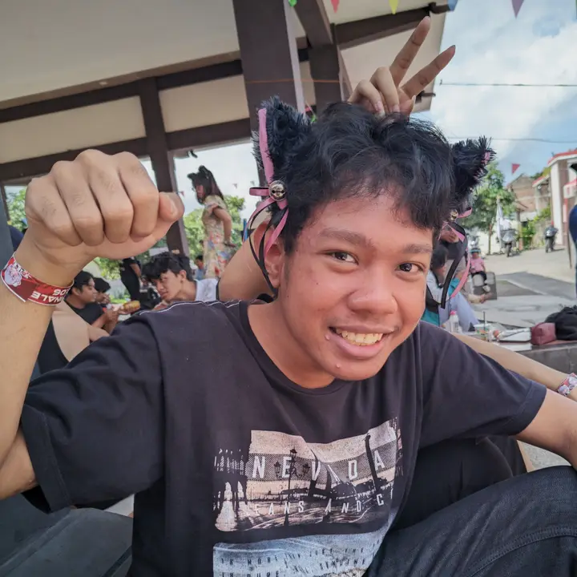
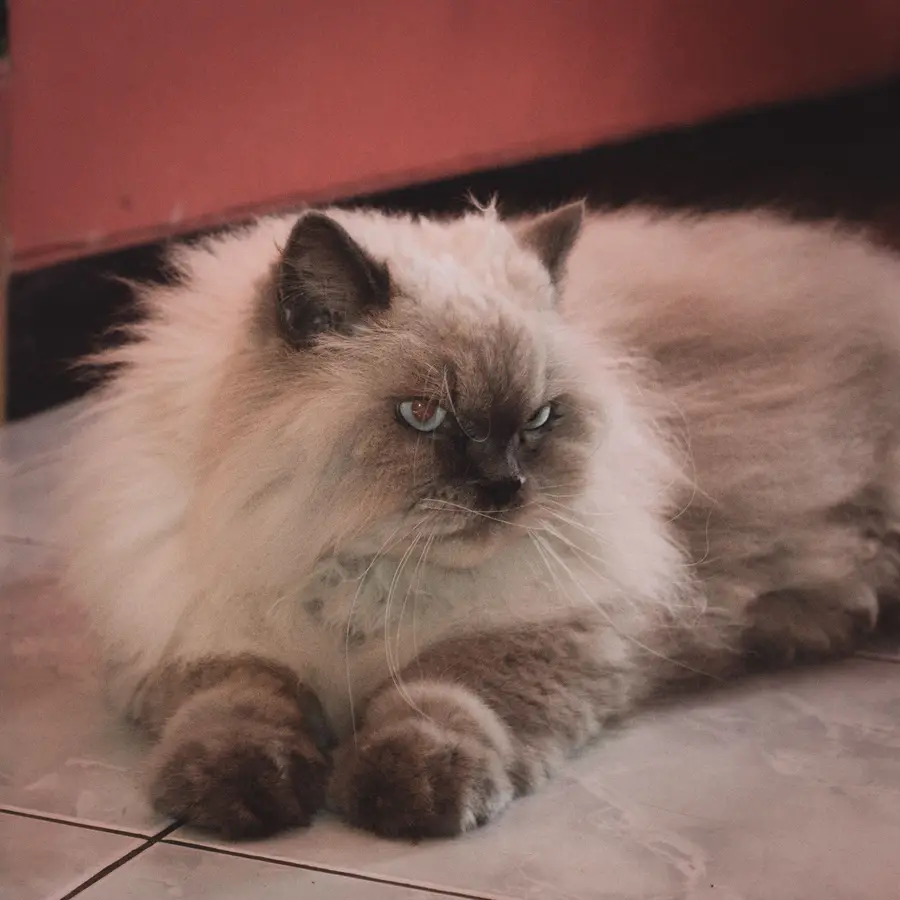

Data, pixels, & one shy cat.
Farhan Kurnia Febriansyah
Informatics, Universitas Muhammadiyah Malang
Malang, Jawa Timur, Indonesia
Abstract
Hello, my name is Farhan Kurnia Febriansyah. This is my personal website, where I share my projects, photography, and lab notes. Also how did you get here?
Keywords: statistics, machine learning, photography, home lab, linux, open source, cats, coffee, D&D

Table 1: Author parameters.
| Parameter | Value |
|---|---|
| Field | CompSci, Statistics, ML, Proxmox |
| Based in | Malang, Indonesia |
| Coffee | i lost track |
| Uptime | better than your ISP's |
1Featured projects
- 1Self-Hosted Home Lab. Proxmox + TrueNAS SCALE on ZFS, exposed through Tailscale and Cloudflare Tunnel behind CGNAT. The infrastructure this site runs on. Ongoing saga, 2025.
- 2NumPy-Only ML Algorithms.† Classic algorithms and papers reimplemented from scratch, then checked against the reference results. Semester project, 2025.
- 3CTF Discord Bot.† A Discord bot that runs a capture-the-flag platform for an open recruitment. Weekend hack, 2024.
See all projects.
2Latest posts
- 4Running Proxmox on 16 GB of RAM.† What fits, what does not, and the memory settings that made the difference. Home lab, 12 Oct 2026. 6 min read.
- 5Logistic Regression With Only NumPy.† Deriving the gradient by hand and checking the result against scikit-learn. Machine learning, 3 Sep 2026. 9 min read.
- 6Shooting the Milky Way With a Sony a6000.† Settings, stacking, and what a kit lens can and cannot do. Photography, 21 Jul 2026. 5 min read.
See all posts.
3Lab notes
Note 1 (Current obsession). Markov Chain Monte Carlo Simulation. Someone has to predict the unpredictable behaviour of orange cats.
Note 2 (Coffee intake). tbh it is probably at unhealthy level
Note 3 (Experiment #37). Teaching the cats that everything happens for a reason, and to stay focus on one task at a time
Note 4 (Reading pile). Photography tutorial, and D&D module I keep pretending is research.
4Photography
Off-hours photography collection, when i'm away from keyboard. See the full gallery.

(a) milky way

(b) Scorpius

(c) Molly